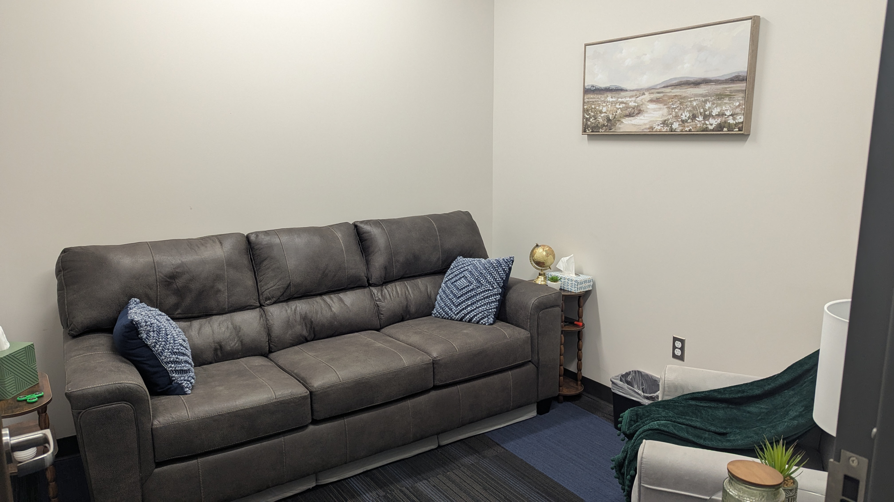
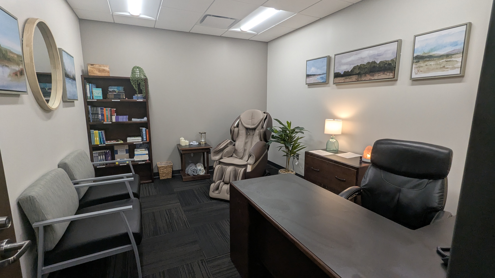
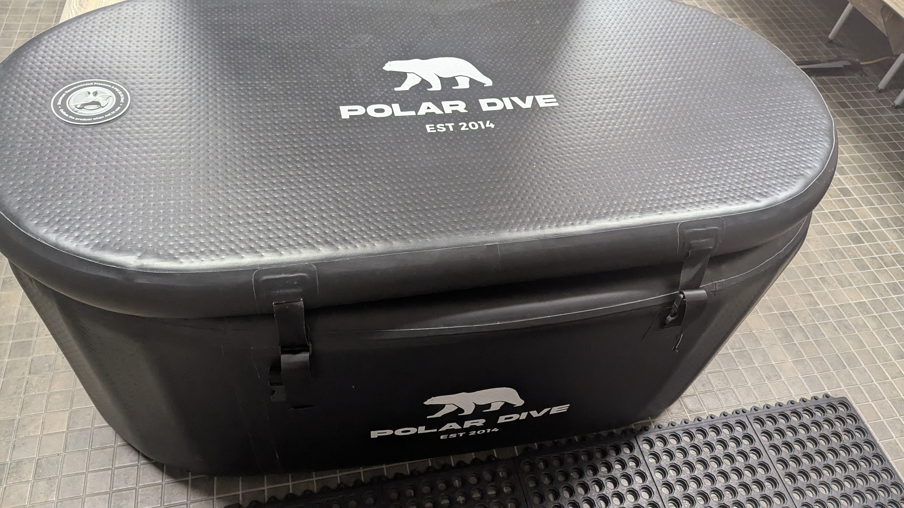
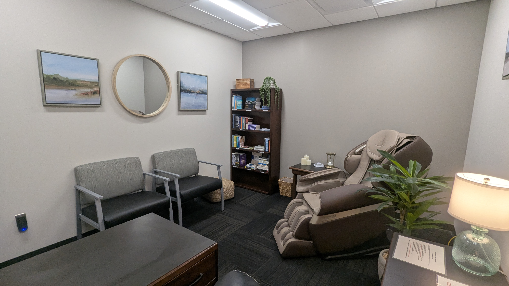

01 — MIND
Mental & Emotional Wellness
Supporting access to confidential professional resources, resilience-building opportunities and programs that encourage officers to seek support when they need it.
The Jeffersontown Police Foundation seeks to support the wellness program at the Jeffersontown Police Department by helping provide resources and opportunities that promote the mental, emotional and physical well-being of the men and women who serve our community.
Law enforcement professionals face unique physical and emotional demands. A strong wellness program gives officers practical ways to care for their health, build resilience, recover from difficult experiences and stay connected to resources that can help throughout their careers.
The Foundation can help strengthen those efforts by supporting wellness resources that fall outside traditional public funding and by helping the department continue building a culture where taking care of the people who serve is part of the mission.
Wellness is more than one program or one resource. It means creating multiple pathways that support officers throughout the physical, emotional and cumulative demands of a law-enforcement career.
Supporting access to confidential professional resources, resilience-building opportunities and programs that encourage officers to seek support when they need it.
Helping expand resources that support fitness, recovery, nutrition and sustainable healthy habits for the demands of police work.
Supporting tools and resources that help personnel recover after critical incidents, manage cumulative stress and maintain long-term well-being.
These are real wellness spaces and resources available within the department — designed to give personnel practical opportunities to decompress, recover, stay physically healthy and connect with support.





Help sustain access to qualified mental-health and wellness professionals and reduce barriers to confidential support.
Support equipment and recovery resources that help officers care for their bodies and remain ready for the physical demands of the job.
Provide opportunities focused on resilience, stress management, suicide prevention, peer support and other wellness topics.
Help create sustainable resources and programs that normalize wellness as an essential part of professional readiness and service.
Your contribution to the Jeffersontown Police Foundation can help fund and expand vital wellness resources that support the whole person behind the badge — strengthening officers, their families, the department and the community they serve.